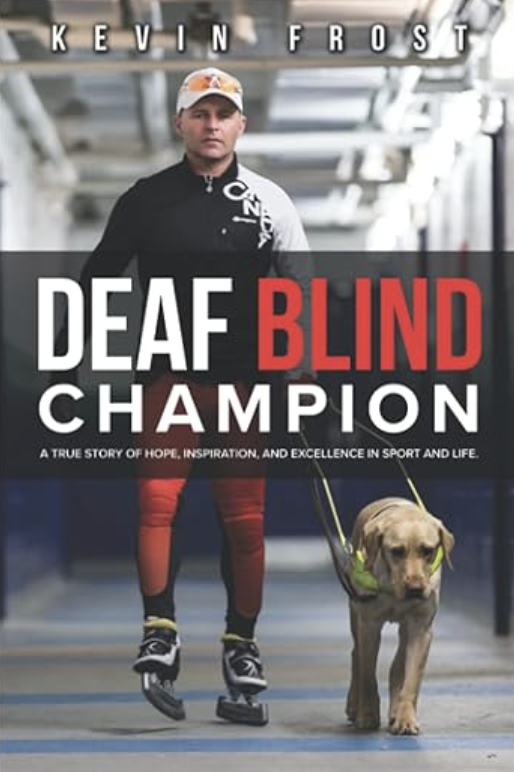
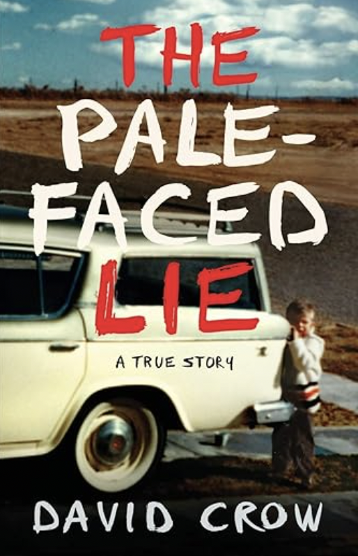
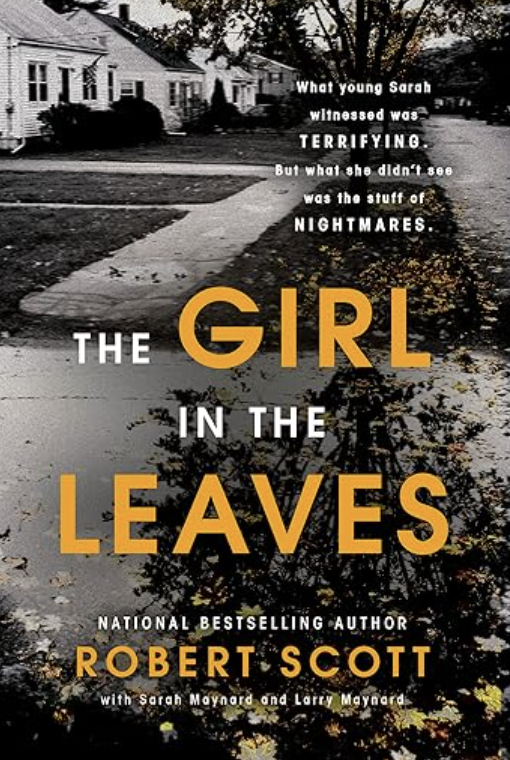

| Title |
Image |
Rating |
Description |
Amazon Link |
| Deaf Blind Champion |
 |
5/5 |
After a life changing diagnosis Kevin Frost overcomes all of his struggles to become a deaf blind champion as well as a family man. A true story of triumph and a reflection on his life. |
Purchase Here |
| The Last Train |
 |
4.5/5 |
A true stroy about a family outlasting the nazis rule in Germany. When the family was sent on a train with an unpleasant destination all hope was lost, however and unexpected liberation of the train
occurred preventing the train from making it to its destination, saving the family and all passengers aboard. |
Purchase Here |
| The Pale-Faced Lie |
 |
4.3/5 |
The story of David Crow growing up through a rough childhood, an abusive father, and a mother unfit to parent, he overcomes adversity and determination David gets into college to prove he can. |
Purchase Here |
| In Order to Live |
|
4/5 |
The story of a young girl who was born in Korea, and long brutal childhood of misery beyond comprehension, and her eventual escape to South Korea. It is a truly inspiring read.
| Purchase Here |
| The Girl in the Leaves |
 |
3.5/5 |
4 people disappear without a trace, one being found in a house full of leaves, but no others. This book truly shows the courage of a young girl. |
Purchase Here |
The View from the Cheap Seats |
 |
3.5/5 |
Neil Gaiman—offering a glimpse into the head and heart of one of the most acclaimed, beloved, and influential artists of our time
|
Purchase Here |